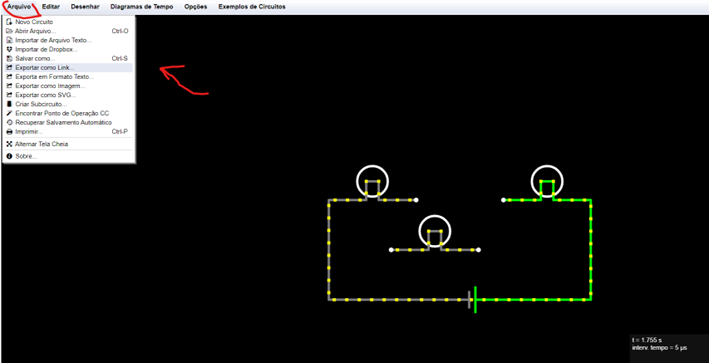

Instruções
Como usar a ferramenta:
Se você está nesta página, é porque precisa de instruções de como se tornar um treinador. Primeiramente, deve-se deixar claro que sua participação vai auxiliar na inclusão de respostas na base do chatbot permitindo a evolução da ferramenta. Para acessá-lo é só clicar em: link do magneton A partir do link você vai abrir uma página web chamada “sample website” que não contêm informações (ela serve apenas para alocação do bot). Clique no ícone de chat azul no canto inferior direito de sua tela para começar sua interação.
Obs: Vale lembrar que este site está em construção para uma próxima versão. Neste momento o importante é a interação com o chatbot.
O que é importante saber?
- Por favor, respondas as perguntas do laboratório acessando: Laboratório Reflexivo > Laboratório de circuitos elétricos.
- Por favor, respeite o tempo do assistente! Espere ele perguntar para você responder!
- O sistema está em construção e depende das suas considerações e treino, por tanto, as vezes não poderá fornecer uma resposta ou poderá se confundir de acordo com o contexto. Ao fugir do tema, o chatbot não conseguirá lhe oferecer respostas ou talvez te ofereça uma resposta diferente do esperado.
- Se atente as respostas, tente não fugir do que o professor lhe explicou.
- Obs: O chatbot proposto não tem o mesmo funcionamento e propósito que chats generativos. Além disso, o projeto não é financiado por uma grande empresa e há apenas uma desenvolvedora. Por tanto, você terá que focar no que está sendo perguntado e tentar responder considerando suas interações com os laboratórios.
Questionário Avaliativo:
Ao final, por favor, responda ao questionário abaixo, pois nos ajudará a entender em quais aspectos além do banco você percebeu que ele deve melhorar.
O link do questionário é pode ser acessado clicando em "Formulário": Formulário
Dúvidas sobre o Laboratório
O laboratório virtual é escolhido pelo professor da disciplina qualquer dúvida sobre como utilizado, por favor entre em contato.
Uma possível dúvida que pode surgir é sobre como enviar o link das resoluções no laboratório falstad, para isso siga o tutorial a baixo:
Abrir a página como instruído pelo chatbot Magneton. Faça seus experimentos e após clique em "Arquivo” no canto superior esquerdo de sua tela. Irá abrir um menu e você deve clicar em: “Exportar como link...”.
Ao clicar, irá abrir uma nova página com um link. e basta você copiar a versão completa ou curta do link.

Obs: Para copiar a versão curta basta clicar em “Criar URL curto” e dar “OK”
Depois de realizar essas ações basta colar o link no Magneton, no campo onde foi solicitado.
Obs:: Você tem um tempo de no máximo 5 minutos para responder com o link. Pode ocorrer de caso você demore muito para voltar a interação com o magneton, neste momento, você tenha que reiniciar uma nova conversa. Tudo é teste!